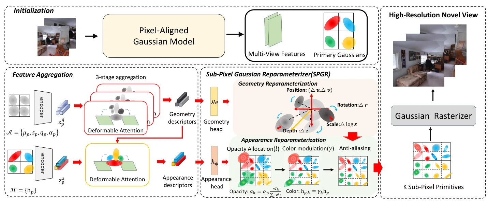

SubSplat：通过亚像素高斯重参数化实现高分辨率像素对齐 3DGSSubSplat: High-Resolution Pixel-aligned 3DGS via Sub-pixel Gaussian Reparameterization
问题定义清晰，对一般化 pixel-aligned 3DGS 有直接效率价值；摘要没有量化质量、显存和 primitive 数量，成本可能转移到渲染阶段。
一句话工作总结
从低分辨率特征亚像素细分 Gaussians，并聚合多视图特征，缓解高分辨率 3DGS 的质量—计算矛盾。
摘要
SubSplat 针对 pixel-aligned Gaussian Splatting 中输入分辨率与网络计算量的矛盾：提高输入分辨率可改善细节，但网络成本呈二次增长；维持低分辨率则导致 Gaussian density 不足和伪影。方法提出 Sub-pixel Gaussian Reparameterizer，将 primary Gaussians 细分为更精细的 primitives，直接从低分辨率特征恢复结构密度，并通过多视图 feature aggregation 捕获高频细节。RealEstate10K 与 ACID 实验表明，该方法可在控制网络计算成本时提高高分辨率渲染保真度。
Pixel-aligned Gaussian splatting enables efficient and generalizable novel-view synthesis. However, high-resolution rendering faces a critical trade-off where increasing input resolution improves detail at the expense of quadratically rising network computational cost. Conversely, maintaining low-resolution inputs stabilizes this cost but results in insufficient Gaussian density and artifacts. To address this, we propose SubSplat, which introduces Sub-pixel Gaussian Reparameterizer(SPGR) to subdivide primary Gaussians into fine-grained primitives, restoring structural density directly from low-resolution features. We further enhance the reparameterization quality through feature aggregation, which effectively captures high-frequency details across multiple views. Experiments on RealEstate10K and ACID demonstrate that SubSplat achieves high-fidelity rendering with superior efficiency. Our results validate that the proposed framework successfully resolves the trade-off between reparameterization fidelity and network computational cost inherent in pixel-aligned Gaussian Splatting.
中文解读摘录
- 作者：Jiun Lee, Jaekwang Kim, Sangmin Lee
- 价值判断：针对 pixel-aligned Gaussian Splatting 的高分辨率细节与二次增长网络成本矛盾，尝试从低分辨率特征恢复足够 Gaussian density。
- 技术要点：Sub-pixel Gaussian Reparameterizer 将 primary Gaussians 细分为更精细 primitives，并通过多视图 feature aggregation 补充高频细节，避免直接提高输入分辨率。
- 结果边界：RealEstate10K 与 ACID 上摘要称兼顾高保真和效率，但未提供具体质量、显存和吞吐数字；需比较 Gaussian 数量增长是否只是把成本转移到 rasterization。
- 链接：arXiv · PDF
图表/页面预览

{kind=link}
